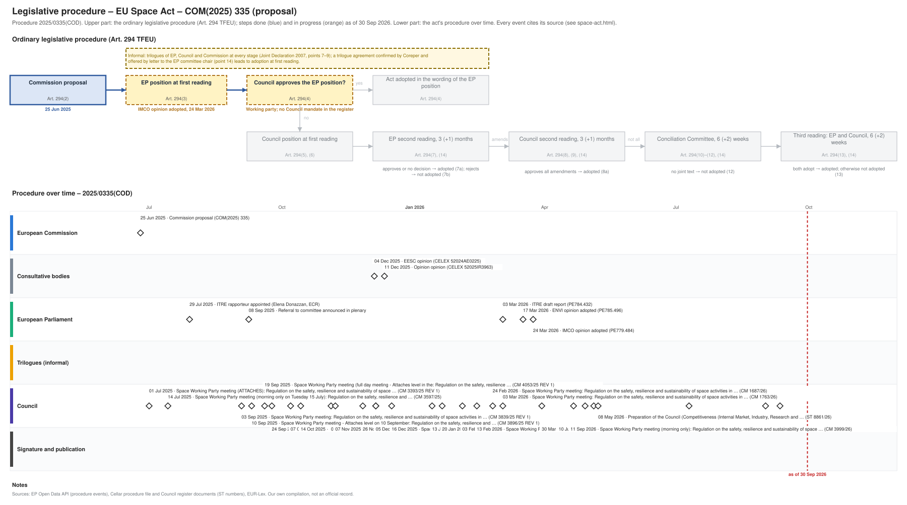

← Regulation timeline › EU Space Act › Legislative procedure · All procedures
Procedure 2025/0335(COD), ongoing, as of 06 Oct 2026. Drawing: SVG · PNG · PDF (A3) · draw.io · Page as Markdown: space-act.md
| Stage | EP committee stage |
|---|---|
| Parliament | draft report 03 Mar 2026 |
| Council | working party, latest document 01 Sep 2026 |
| Latest activity | 11 Sep 2026 · Council: Space Working Party meeting (morning only): Exchange of views (7806/26) (CM 3999/26) |
| Next steps | EP: amendments and committee vote on the report and mandate; Council: working party towards a negotiating mandate |

| Committee | Role | Rapporteur | Shadow rapporteurs |
|---|---|---|---|
| ITRE Industry, Research and Energy | Responsible | Elena Donazzan (ECR), appointed 29 Jul 2025 | Angelika Niebler (EPP), Giorgio Gori (S&D), András Gyürk (PfE), Christophe Grudler (Renew), Sergey Lagodinsky (Greens/EFA), Marina Mesure (The Left) |
| ENVI Environment, Climate and Food Safety | Opinion | Pierfrancesco Maran (S&D), appointed 24 Feb 2026 | Sirpa Pietikäinen (EPP), Mathilde Androuët (PfE), Pietro Fiocchi (ECR), Katri Kulmuni (Renew), Rasmus Nordqvist (Greens/EFA), Sebastian Everding (The Left) |
| IMCO Internal Market and Consumer Protection | Opinion | François Kalfon (S&D), appointed 30 Sep 2025 | Tomáš Zdechovský (EPP), Ivars Ijabs (Renew) |
Source: EP Open Data API (participations) and the Legislative Observatory (joint committee, opinions declined); names link to each Member's page on the EP website. The API names no committee for shadow rapporteurs; they are assigned by the EP's order of participants, which groups each committee.
| Date | Actor | Event | Document | Source |
|---|---|---|---|---|
| 2025-06-25 | European Commission | Commission proposal (Art. 294(2) TFEU) | COM(2025) 335 · en.md de.md | Cellar (CELEX 52025PC0335) |
| 2025-07-01 | Council | Space Working Party meeting (ATTACHES): Presentation by the Commission (doc. ) (10935/25+ADD 1); Impact … | CM 3393/25 REV 1 | Council register, CM 3393/25 REV 1 (notice of meeting and provisional agenda) |
| 2025-07-14 | Council | Space Working Party meeting (morning only on Tuesday 15 July): Presentation by the Commission (doc. ) … | CM 3597/25 | Council register, CM 3597/25 (notice of meeting and provisional agenda) |
| 2025-07-29 | European Parliament | ITRE rapporteur appointed (Elena Donazzan, ECR) | EP procedure file | EP Open Data API, procedure 2025-0335 (participation RAPPORTEUR) |
| 2025-09-03 | Council | Space Working Party meeting: Exchange of views (doc. ) (10935/25+ADD 1) | CM 3839/25 REV 1 | Council register, CM 3839/25 REV 1 (notice of meeting and provisional agenda) |
| 2025-09-08 | European Parliament | Referral to committee announced in plenary | EP procedure file | EP Open Data API, procedure 2025-0335 (REFERRAL) |
| 2025-09-10 | Council | Space Working Party meeting - Attaches level on 10 September: Presentation by the Commission Examination … | CM 3896/25 REV 1 | Council register, CM 3896/25 REV 1 (notice of meeting and provisional agenda) |
| 2025-09-19 | Council | Space Working Party meeting (full day meeting - Attaches level in the: Presentation by the Commission … | CM 4053/25 REV 1 | Council register, CM 4053/25 REV 1 (notice of meeting and provisional agenda) |
| 2025-09-24 | Council | Space Working Party meeting: Impact assessment – Presentation by the Commission (doc. ADD 2-5) (10935/25); … | CM 4118/25 REV 1 | Council register, CM 4118/25 REV 1 (notice of meeting and provisional agenda) |
| 2025-10-07 | Council | Space Working Party meeting (ATTACHES): Presentation by the Commission (10935/25+ADD 1) | CM 4300/25 REV 1 | Council register, CM 4300/25 REV 1 (notice of meeting and provisional agenda) |
| 2025-10-14 | Council | Space Working Party meeting: Examination (doc. ) (10935/25+ADD 1) | CM 4496/25 | Council register, CM 4496/25 (notice of meeting and provisional agenda) |
| 2025-11-04 | Council | Space Working Party meeting: Examination (doc. ) (10935/25+ADD 1) | CM 4791/25 | Council register, CM 4791/25 (notice of meeting and provisional agenda) |
| 2025-11-07 | Council | Space Working Party meeting (Attachés) - Morning only: Examination (doc. ) (10935/25+ADD 1) | CM 4792/25 | Council register, CM 4792/25 (notice of meeting and provisional agenda) |
| 2025-11-26 | Council | Preparation of the Council (Competitiveness (Internal Market, Industry, Research and … | ST 15830/25 · en.md de.md | Cellar procedure file 2025/335 (Council register) |
| 2025-12-04 | Consultative bodies | EESC opinion | CELEX 52024AE0225 | Cellar procedure file 2025/335 |
| 2025-12-05 | Council | Regulation on the safety, resilience and sustainability of space activities in the Union … | ST 16435/25 · en.md | Cellar procedure file 2025/335 (Council register) |
| 2025-12-05 | Council | Regulation on the safety, resilience and sustainability of space activities in the Union … | ST 16437/25 · en.md | Cellar procedure file 2025/335 (Council register) |
| 2025-12-11 | Consultative bodies | Committee of the Regions opinion | CELEX 52025IR3963 | Cellar procedure file 2025/335 |
| 2025-12-16 | Council | Space Working Party meeting: Information from the Presidency (16435/25, 16437/25) | CM 5418/25 | Council register, CM 5418/25 (notice of meeting and provisional agenda) |
| 2026-01-13 | Council | Space Working Party meeting: EU Space Act – Public consultation (doc. ) – Presentation by the Commission … | CM 1072/26 REV 1 | Council register, CM 1072/26 REV 1 (notice of meeting and provisional agenda) |
| 2026-01-20 | Council | Space Working Party meeting: Examination (doc. ) (16437/25) | CM 1161/26 | Council register, CM 1161/26 (notice of meeting and provisional agenda) |
| 2026-02-03 | Council | Space Working Party meeting: Exchange of views Examination (16437/25) | CM 1393/26 REV 1 | Council register, CM 1393/26 REV 1 (notice of meeting and provisional agenda) |
| 2026-02-13 | Council | Space Working Party meeting: Examination Exchange of views (16437/25) | CM 1542/26 | Council register, CM 1542/26 (notice of meeting and provisional agenda) |
| 2026-02-24 | Council | Space Working Party meeting: Examination Exchange of views (16437/25) | CM 1687/26 | Council register, CM 1687/26 (notice of meeting and provisional agenda) |
| 2026-03-03 | Council | Space Working Party meeting: Examination and exchange of views (16437/25) | CM 1763/26 | Council register, CM 1763/26 (notice of meeting and provisional agenda) |
| 2026-03-03 | European Parliament | ITRE draft report | PE784.432 · en.md de.md | EP Open Data API, procedure 2025-0335 (COMMITTEE_TABLING_REPORT) |
| 2026-03-17 | European Parliament | ENVI opinion adopted | PE785.496 | EP Open Data API, procedure 2025-0335 (COMMITTEE_ADOPTING_OPINION) |
| 2026-03-24 | European Parliament | IMCO opinion adopted | PE779.484 | EP Open Data API, procedure 2025-0335 (COMMITTEE_ADOPTING_OPINION) |
| 2026-03-30 | Council | Presidency compromise text - clean version | ST 7806/26 · en.md | Parliament of Austria, EU database (interinstitutional file 2025/0335(COD)) |
| 2026-04-21 | Council | Space Working Party meeting (Attachés): Exchange of views (7806/26) | CM 2402/26 | Council register, CM 2402/26 (notice of meeting and provisional agenda) |
| 2026-04-29 | Council | Space Working Party meeting: Presentation by the Commission Exchange of views (7806/26) | CM 2542/26 | Council register, CM 2542/26 (notice of meeting and provisional agenda) |
| 2026-05-05 | Council | Space Working Party meeting: Presentation by the Commission Exchange of views (7806/26) | CM 2635/26 | Council register, CM 2635/26 (notice of meeting and provisional agenda) |
| 2026-05-08 | Council | Preparation of the Council (Competitiveness (Internal Market, Industry, Research and … | ST 8861/26 · en.md de.md | Cellar procedure file 2025/335 (Council register) |
| 2026-07-10 | Council | Space Working Party meeting - full day meeting (ATTACHES LEVEL in: Exchange of views (7806/26) | CM 3526/26 REV 1 | Council register, CM 3526/26 REV 1 (notice of meeting and provisional agenda) |
| 2026-09-01 | Council | Space Working Party meeting: Exchange of views (7806/26) | CM 3875/26 | Council register, CM 3875/26 (notice of meeting and provisional agenda) |
| 2026-09-11 | Council | Space Working Party meeting (morning only): Exchange of views (7806/26) | CM 3999/26 | Council register, CM 3999/26 (notice of meeting and provisional agenda) |
Every document the Council register, the EU database of the Parliament of Austria or the EP lists for the procedure, with its state: public documents link to the official file; documents that are not public link to their entry in the Austrian database where there is one (metadata only). Status: public; not public; not public, leak available (an unofficial copy is known to circulate outside the institutions; it is neither published nor quoted here). Released: when a document listed as not public was released, by the date of the Council's public PDF (a technical date) or else the day our daily check found it public.
| Date | Document | Kind | Subject | Status | Released | Text |
|---|---|---|---|---|---|---|
| 2025-06-26 | ST 10935/25 | council-transmission | Proposal for a REGULATION OF THE EUROPEAN PARLIAMENT AND OF THE COUNCIL on the safety, resilience and sustainability of space activities in the Union | public | – | – |
| 2025-06-26 | ST 10935/25 ADD 1 | council-transmission | ANNEXES to the Proposal for a REGULATION OF THE EUROPEAN PARLIAMENT AND OF THE COUNCIL on the safety, resilience and sustainability of space activities in the … | public | – | – |
| 2025-06-26 | ST 10935/25 ADD 2 | council-transmission | Opinion of the board | public | – | – |
| 2025-06-26 | ST 10935/25 ADD 3 | council-transmission | COMMISSION STAFF WORKING DOCUMENT IMPACT ASSESSMENT REPORT Accompanying the document Proposal for a Regulation of the European Parliament and of the Council on … | public | – | – |
| 2025-06-26 | ST 10935/25 ADD 4 | council-transmission | COMMISSION STAFF WORKING DOCUMENT IMPACT ASSESSMENT REPORT Accompanying the document Proposal for a Regulation of the European Parliament and of the Council on … | public | – | – |
| 2025-06-26 | ST 10935/25 ADD 5 | council-transmission | COMMISSION STAFF WORKING DOCUMENT EXECUTIVE SUMMARY OF THE IMPACT ASSESSMENT REPORT Accompanying the document Proposal for a Regulation of the European … | public | – | – |
| 2025-06-27 | WK 8893/25 | council-note | REGULATION OF THE EUROPEAN PARLIAMENT AND OF THE COUNCIL on the safety, resilience and sustainability of space activities in the Union - Impact Assessment … | not public* | – | – |
| 2025-10-09 | ST 13515/25 | council-note | Optional consultation of the Committee of the Regions1 | public | – | – |
| 2025-10-23 | ST 14308/25 | council-note | Cover note from the Czech Senate | not public* | – | – |
| 2025-11-04 | ST 14841/25 | council-note | Cover note from the Swedish Riksdag | not public* | – | – |
| 2025-11-11 | ST 15242/25 | council-note | Cover note from the Romanian Senate | not public* | – | – |
| 2025-11-13 | WK 15484/25 | council-progress-report | Draft progress report on the proposal for a Regulation of the European Parliament and of the Council on the safety, resilience and sustainability of space … | not public* | – | – |
| 2025-11-26 | ST 15830/25 | council-progress-report | Preparation of the Council (Competitiveness (Internal Market, Industry, Research and Space)) on 8-9 December 2025 Regulation on the safety, resilience and … | public | – | en de |
| 2025-11-26 | ST 15867/25 | council-note | Preparation of the Council (Competitiveness (Internal Market, Industry, Research and Space)) on 8-9 December 2025 Regulation on the safety, resilience and … | public | – | – |
| 2025-12-04 | CELEX 52024AE0225 | opinion | Opinion of the European Economic and Social Committee – Proposal for a Regulation of the European Parliament and of the Council on the safety, resilience and … | public | – | – |
| 2025-12-05 | ST 16435/25 | council-compromise | Regulation on the safety, resilience and sustainability of space activities in the Union (EU Space Act) - Presidency compromise text | public | – | en |
| 2025-12-05 | ST 16437/25 | council-compromise | Regulation on the safety, resilience and sustainability of space activities in the Union (EU Space Act) - Presidency compromise text - clean version | public | – | en |
| 2025-12-05 | WK 16590/25 | council-note | EU Space Act: MS comments on articles (deadline 7/10/2025) | public | – | – |
| 2025-12-05 | WK 16591/25 | council-note | EU Space Act: MS comments on Titles I, IV (chapt. II-VI), V, VI and Annexes VII and VIII (deadline 24/10/2025) | public | – | – |
| 2025-12-05 | WK 16592/25 | council-note | EU Space Act: MS comments on Title II (art. 10+15), IV (chapt.I: art. 58-74), VII (art. 113-119) and Annexes I-VI, IX and X (deadline 14/11/2025) | public | – | – |
| 2025-12-05 | WK 16852/25 | council-note | EU Space Act - Correspondence table for articles and recitals | public | – | – |
| 2025-12-08 | ST 16553/25 | council-note | REGULATION OF THE EUROPEAN PARLIAMENT AND OF THE COUNCIL on the safety, resilience and sustainability of space activities in the Union - Opinion of the … | public | – | – |
| 2025-12-11 | CELEX 52025IR3963 | opinion | Urgent opinion of the European Committee of the Regions – EU Space Act | public | – | – |
| 2025-12-18 | ST 16944/25 | council-note | Public feedback on the Commission Proposal for a European Space Act | public | – | – |
| 2026-01-20 | WK 839/26 | council-note | EU Space Act – Resilience - Presentation by the Commission | not public* | – | – |
| 2026-02-25 | ST 5893/26 | council-note | Vorschlag für eine Verordnung über die Sicherheit, Resilienz und Nachhaltigkeit von Weltraumtätigkeiten in der Union (EU-Weltraum-Rechtsakt) – Rechtsgrundlage | public | – | – |
| 2026-03-03 | PE784.432 | ep-draft-report | DRAFT REPORT on the proposal for a regulation of the European Parliament and of the Council on the safety, resilience and sustainability of space activities in … | public | – | en de |
| 2026-03-19 | PE785.496 | ep-opinion | OPINION on the proposal for a regulation of the European Parliament and of the Council on the safety, resilience and sustainability of space activities in the … | public | – | – |
| 2026-03-30 | ST 7805/26 | council-compromise | Presidency compromise text | not public* | – | – |
| 2026-03-30 | ST 7806/26 | council-compromise | Presidency compromise text - clean version | public | – | en |
| 2026-03-30 | WK 4510/26 | council-note | Comments from Austria and other Member States on articles | not public* | – | – |
| 2026-03-30 | WK 4512/26 | council-note | Comments from Member States on recitals | not public* | – | – |
| 2026-03-30 | WK 4513/26 | council-note | Comments from Member States on annexes | not public* | – | – |
| 2026-04-14 | PE786.873 | ep-amendments | public status unknown | – | – | |
| 2026-04-14 | PE786.876 | ep-amendments | public status unknown | – | – | |
| 2026-04-14 | PE786.879 | ep-amendments | public status unknown | – | – | |
| 2026-04-14 | PE786.883 | ep-amendments | public status unknown | – | – | |
| 2026-04-14 | PE786.884 | ep-amendments | public status unknown | – | – | |
| 2026-04-14 | PE786.887 | ep-amendments | public status unknown | – | – | |
| 2026-04-14 | PE786.888 | ep-amendments | public status unknown | – | – | |
| 2026-04-14 | PE786.889 | ep-amendments | public status unknown | – | – | |
| 2026-04-14 | PE786.890 | ep-amendments | public status unknown | – | – | |
| 2026-04-21 | PE779.484 | ep-opinion | OPINION on the proposal for a regulation of the European Parliament and of the Council on the safety, resilience and sustainability of space activities in the … | public | – | – |
| 2026-04-21 | ST 8400/26 | council-note | REGULATION OF THE EUROPEAN PARLIAMENT AND OF THE COUNCIL on the safety, resilience and sustainability of space activities in the Union - Opinion of the … | public | – | – |
| 2026-04-29 | WK 6165/26 | council-note | EU Space Act - Setting the foundations of an internal market for space - Presentation by the Commission | not public* | – | – |
| 2026-05-08 | ST 8861/26 | council-progress-report | Preparation of the Council (Competitiveness (Internal Market, Industry, Research and Space)) on 28-29 May 2026 Regulation on the safety, resilience and … | public | – | en de |
| 2026-07-17 | WK 10690/26 | council-note | Presidency orientation paper on the scope of the EU Space Act | not public* | – | – |
| 2026-09-01 | WK 13261/26 | council-note | EU Space Act - Minimum harmonisation - Presentation by the Commission | not public* | – | – |
| 2026-09-01 | WK 13262/26 | council-note | EU Space Act - Application to governmental assets - Presentation by the Commission | not public* | – | – |
| 2026-09-01 | WK 13263/26 | council-note | EU Space Act - Space-based data - Presentation by the Commission | not public* | – | – |
* Not public: the registers are checked again daily until the document is released; last check 2026-10-09.
Unofficial Markdown conversions for reading, searching and project folders; only the official document is authentic. "Read" opens the rendered text on GitHub, where a link to a provision (#art-13, #rec-12, #annex-i) jumps to it.
| Date | Stage | Document | Markdown | Read |
|---|---|---|---|---|
| 2025-06-25 | com-proposal | CELEX 52025PC0335 | en de | GitHub |
| 2025-11-26 | council-progress-report | ST 15830/25 | en de | GitHub |
| 2025-12-05 | council-compromise | ST 16435/25 | en | GitHub |
| 2025-12-05 | council-compromise | ST 16437/25 | en | GitHub |
| 2026-03-03 | ep-draft-report | PE784.432 | en de | GitHub |
| 2026-03-30 | council-compromise | ST 7806/26 | en | GitHub |
| 2026-05-08 | council-progress-report | ST 8861/26 | en de | GitHub |